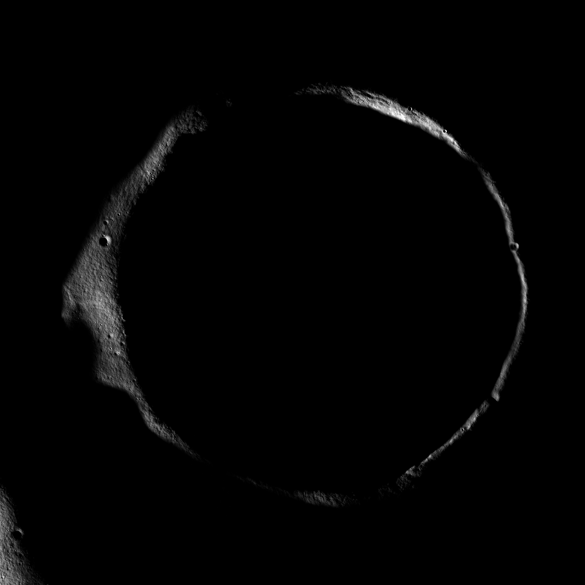
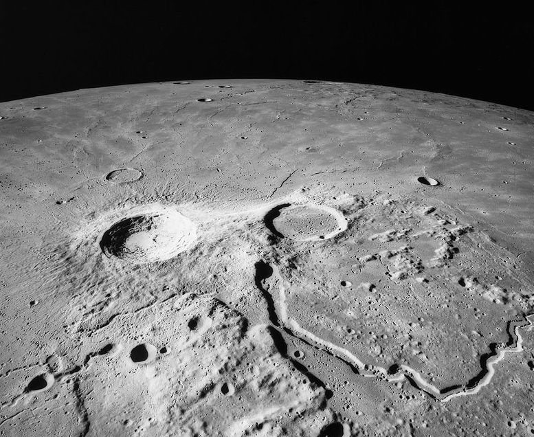

<!DOCTYPE html>
<html>
	<head>
		<title>Crater</title>
	</head>
</html>

<h1>The crater</h1>

<body>You jump in the hole and realize how far down this crater goes as you float down from the lack of gravity in space. It gets so dark to the point you start tp question if its worth going even farther down. You look up and you can still see the opening of the crater but maybe you can look around a little more even though it seems to be getting dangerous.</body>

<br></br>



<h2>Choose wisely</h2>

<h3><a href="p3.html">Go back to the surface of the moon</a> or <a href="p8.html">Search around the dark crater</a></h3>